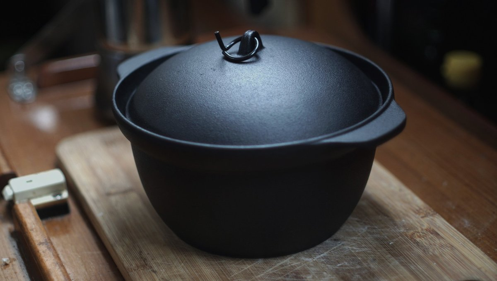
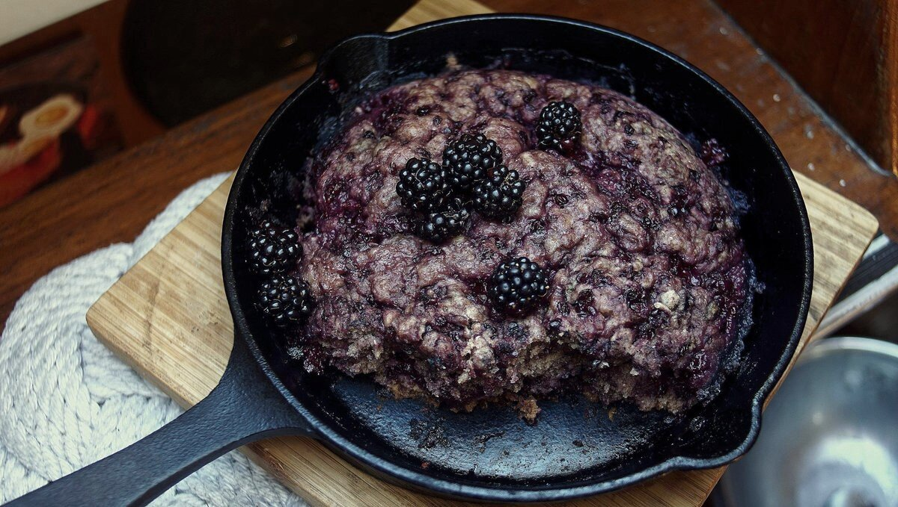

cast iron cookware
Cast-iron cookware on a sailboat? Hell yes. Aboard Pino we have 2 cast-iron pans, and 1 cast-iron pot. Our larger pan has an enamel coating on the outside, and was pre-seasoned, the smaller 20 cm(7 in) pan is plain cast-iron (purchased at Komeri in Japan, nothing special about it), and the rice pot(Oigen foundry) is a traditional Nambu tekki(南部鉄器), traditional iron cookware from Iwate, Japan (only cast-iron produced in this area can be called Nambu Tekki). Conveniently, the lid for the rice pot fits over the smaller pan.
How does cast-iron fair on a boat? If you use your cookware often, and maintain them with a coat of oil they will fair fine. Food will not stick on a well-seasoned pan, and this coat doubles as rust protection. Every time you cook with oil in your pan, you're adding another layer to the seasoning.
Cast-iron has good heat retention, ideal when you want to slow-cook food to save fuel (see saving fuel). Another amazing quality of this type of cookware is that it is a good source of iron, because the iron from the pan or pot leeches into the food you cook.
Maintenance: Immediately after use, clean cast-iron cookware with plain hot water and a scrubbing brush (tawashi). Stuck on food can be removed with a paste made of coarse salt and water. Dry with a towel, or over the stove at a low flame/setting, and coat with a layer of vegetable oil. We use canola oil, because it is inexpensive and easy to find. Do not let cast-iron air dry.
Rust? If ever there is rust it is possible to scrub it off, and to effectively rejuvenate them. A good cast-iron pan will last forever, in fact cast iron only gets better with use.
Re-seasoning: If ever you have to re-season your whole pan (too much rust for example), use steel wool to remove the rust, then scrub the pan with soap (fine since it's going to be re-seasoned), rinse and dry well. Coat the inside and outside of the pan with a thin layer of canola oil (if you tilt the pan it shouldn't drip out), and place the cookware in the oven upside down (this helps prevent oil from pooling on the cooking surface). Place a large baking sheet or aluminum foil on the bottom rack. Bake at 205-260°C(450-500 °F) for one hour. Allow to cool completely in the oven.
Highly acidic foods, like tomatoes, can break down the seasoning on cast iron, but it won't be an issue if the pan is well-seasoned.